How to use the priority indexes and account reports
A field guide for AEs and CSMs working the Education opportunity engine. All screenshots come from the live UK Higher Ed index and the University of Birmingham report; the CRUE (Spain) and K-12 (Iberia) indexes work the same way, with the differences listed at the end.
⚠️ Internal use only · aggregated figures, no personal data · guide updated 3 August 2026
Open your index (UK, CRUE or K-12). The KPI band at the top tells you the size of the game; the Renewals in the next 30 days box is your this-month to-do list.
Scroll to the Opportunity explorer and filter by the play you own — or sort by Nearest renewal if you work renewals.
Click any row to expand it: you get the suggested action, the key numbers, the ARR context and the executive summary — enough to decide whether to act without opening anything else.
When you do need depth, hit Report ↗ — it is on every row, expanded or not — and you land on that institution's full report.
1. Header and portfolio KPIs
The top band answers "how big is this portfolio and where does it stand" before you touch a single filter.
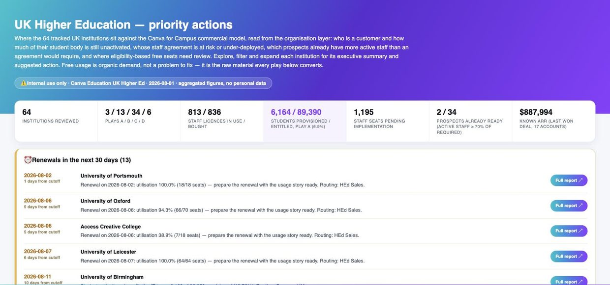
Fig. 1 — Hero, KPI band and the start of the renewals block. KPIs left to right: institutions reviewed · how many fall in each play (A/B/C/D) · staff licences in use vs bought · students provisioned vs entitled for Play A accounts · staff seats bought but not yet implemented · prospects already Campus-ready · known ARR (real won Salesforce deals, pending confirmation).
2. Renewals block — your month at a glance
Every agreement renewing in the next 30 days, sorted by date, each with a one-line instruction and its Full report ↗ button. Two patterns to recognise:
High utilisation (≥85%)
"Prepare the renewal with the usage story ready" — the licence is full, walk in with the numbers. Routing: HEd Sales.
Student activation near 0%
"Open the provisioning conversation before renewing, not after" — the deal is signed but the students were never unlocked. Routing: Success / IM.
Dates are computed against the data cutoff (shown in the header badge), not against today. If the cutoff is a few days old, "1 day from cutoff" may already be past — check before calling.
3. The opportunity explorer
All institutions in one table. Six controls, combinable; the Showing N / total counter on the right confirms what your filters caught.
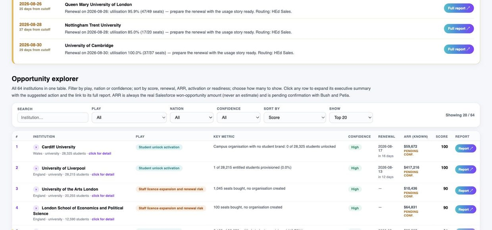
Fig. 2 — Search (institution name) · Play (A student activation / B staff expansion & renewal risk / C Campus-ready prospect / D eligibility review / no play) · Nation · Confidence (high/medium/low) · Sort by (score, nearest renewal, known ARR, lowest activation, readiness, out-of-pocket spend) · Show (Top 10/20/30/all). Default view: Top 20 by score.
4. Reading a row
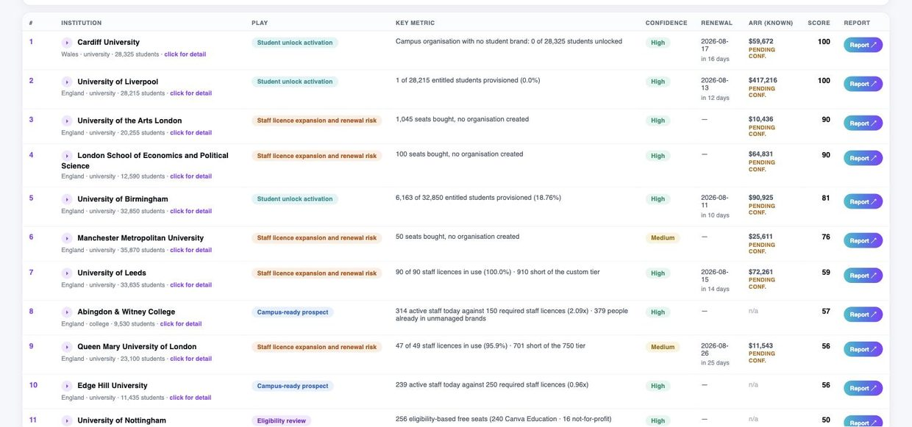
Fig. 3 — Each row: rank · institution (with nation, type, student FTE and a click for detail hint) · play chip · key metric (the one number that justifies the play) · confidence · renewal date · known ARR (always a real won Salesforce amount, flagged pending conf.) · score · Report ↗.
The score = 100 × play weight × intensity × confidence. Play weights: A 1.00 · B 0.90 · C 0.70 · D 0.50; confidence high 1.00 · medium 0.85 · low 0.60. So a score of 100 is a high-confidence Play A at full intensity — the most urgent thing in the portfolio. Use it to order work, not to report value: value is the ARR column and the activation gap.
5. The accordion — decide without leaving the index
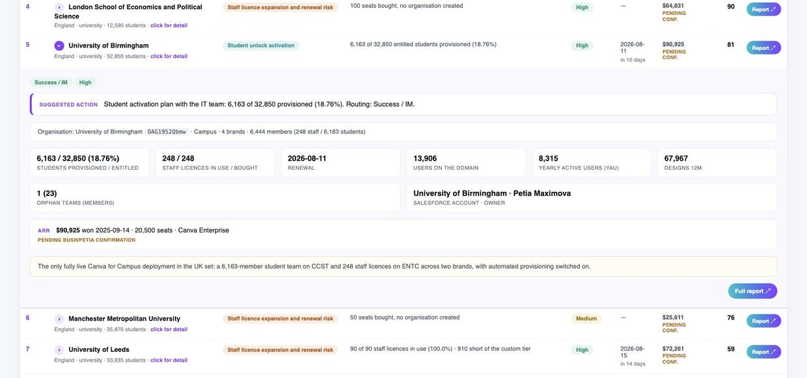
Fig. 4 — University of Birmingham expanded. Top to bottom: routing and confidence chips · suggested action (generated by transparent rules over the data — never free text) · the organisation line (tenant reference, type, brands, members) · stat cards (students provisioned/entitled, staff licences, renewal, users on domain, yearly active users, designs, orphan teams, Salesforce account & owner) · the ARR line with deal date and seats · an executive one-liner · Full report ↗.
Where the suggested action comes from: documented rules over the same data you see (e.g. Play A renewing in ≤45 days with <5% student activation → provisioning conversation before renewal; Play B at ≥95% utilisation → expansion conversation). The rules are printed in full in the index's Method and scope section — if you disagree with an action, you can see exactly which rule fired.
6. Filter recipes
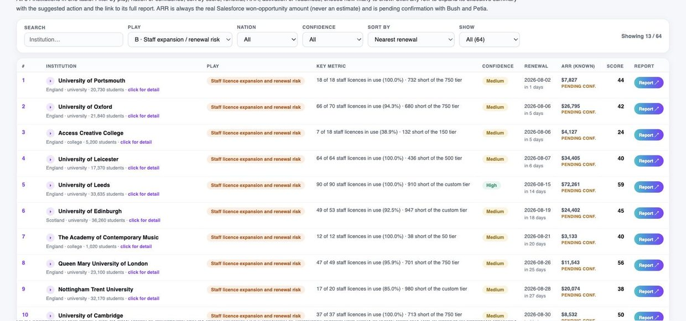
Fig. 5 — Recipe in action: Play = B · Staff expansion / renewal risk, Sort = Nearest renewal, Show = All. The counter reads 13/64: the August renewal run, in date order.
You are…
Set…
You get
Working this month's renewals
Play B · sort Nearest renewal · show All
The renewal calendar with utilisation per row
Driving student activation
Play A · sort Lowest activation
Signed deals with the biggest unactivated student body first
Hunting new logos
Play C · sort Readiness
Prospects whose active staff already exceed the required tier
Building a business case
sort Out-of-pocket spend
Institutions whose users personally pay the most — the friction argument
Preparing a QBR for one account
Search its name · expand · Full report
Everything on record for that institution
7. Play D and "no play triggered"
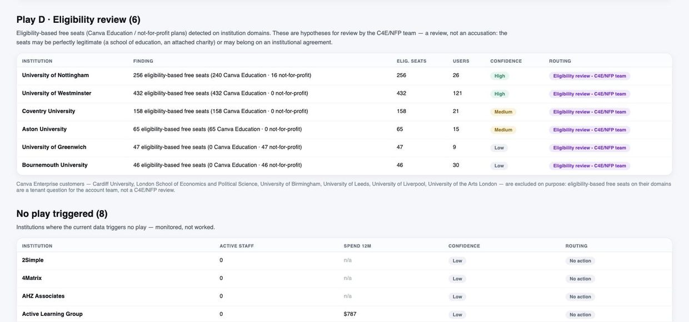
Fig. 6 — Play D lists eligibility-based free seats (Canva Education / not-for-profit plans) detected on institution domains — hypotheses for the C4E/NFP team to review, not accusations: the seats may be perfectly legitimate. Enterprise customers are excluded on purpose. Below it, the no-play section: monitored, not worked.
8. Organisation layer and method
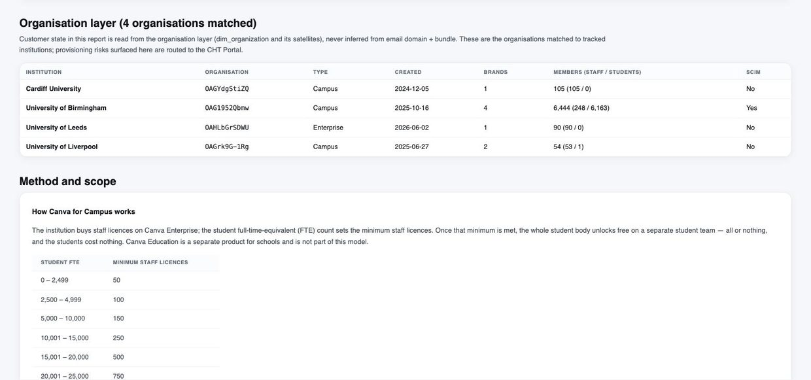
Fig. 7 — Customer state is read from the organisation layer (dim_organization and satellites), never inferred from email domain + bundle. This table shows the matched organisations with tenant type, brands, members and SCIM. Below, the Canva for Campus model: student FTE sets the minimum staff licences; once met, the whole student body unlocks free.
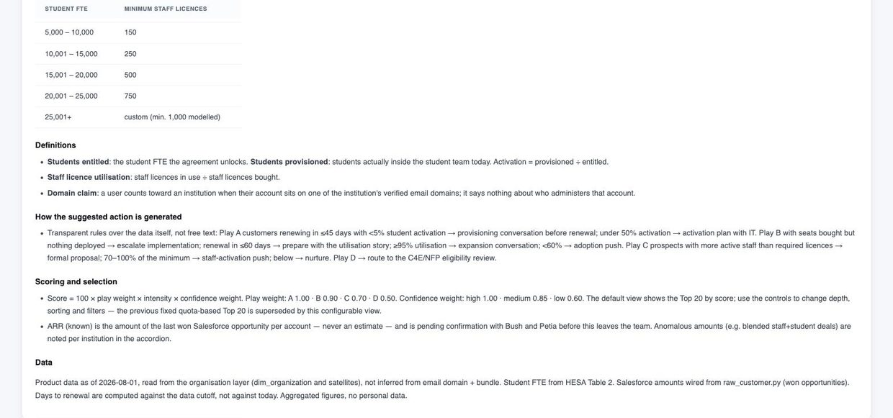
Fig. 8 — The Method and scope footer: definitions (entitled vs provisioned, utilisation, domain claim), the full suggested-action rulebook, and the scoring formula. When someone challenges a number, this is where you point.
9. Inside a full report
Seven sections, always in the same order. Reference: University of Birmingham.
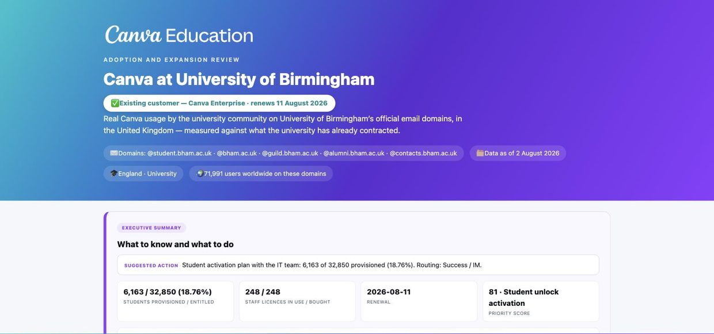
Fig. 9 — Header: customer status and renewal date, the official email domains being counted, data cutoff, and the worldwide-vs-in-country user note. Only in-country users on official domains are counted below.
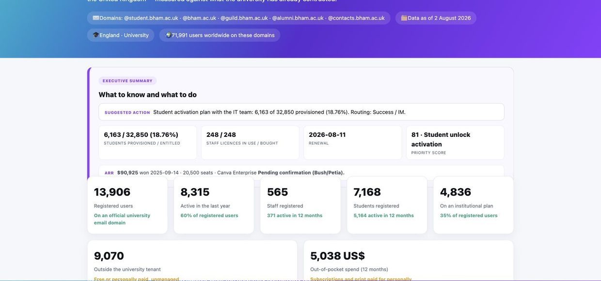
Fig. 10 — Executive summary: the same suggested action as the index, the four decision numbers, the ARR line, then the big-number band (registered, active, staff, students, on-plan, outside tenant, out-of-pocket spend). Reading this section alone is a legitimate way to prep a call.
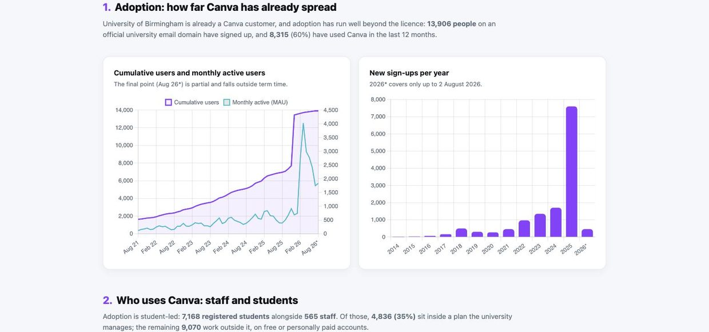
Fig. 11 — Section 1, adoption: cumulative users + MAU (term-time seasonality is normal; summer troughs are the school calendar, not churn) and sign-ups per year.
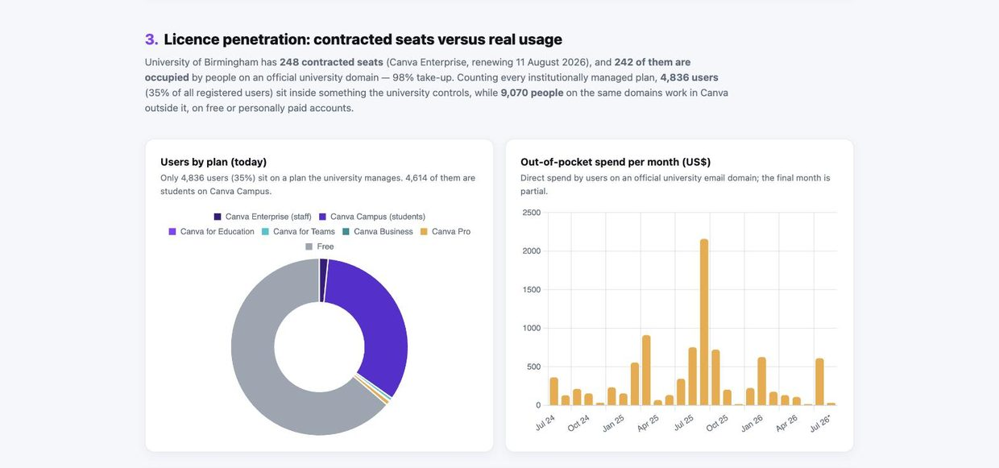
Fig. 12 — Section 3, licence penetration: users by plan (managed vs free) and out-of-pocket spend per month — the expansion argument in two charts.
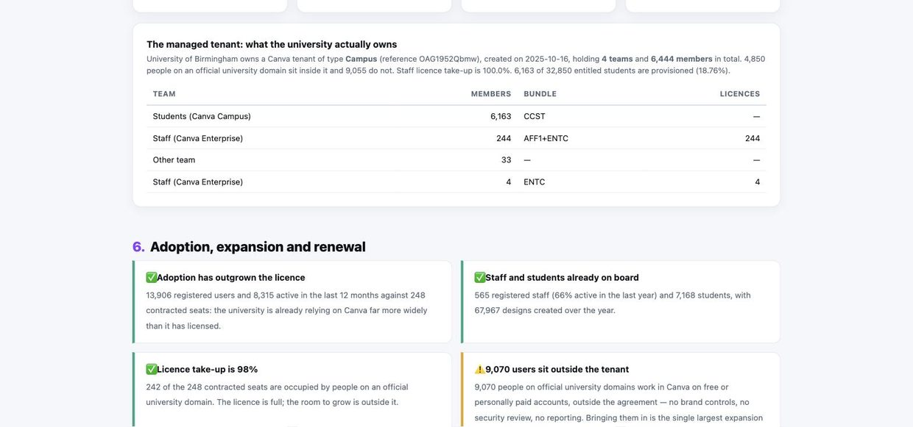
Fig. 13 — Section 5, the managed tenant: team-by-team membership with bundles (CCST students / ENTC staff). Below, section 6: the ✅/⚠️ verdict cards that summarise adoption, expansion and renewal — lift these straight into your QBR deck.
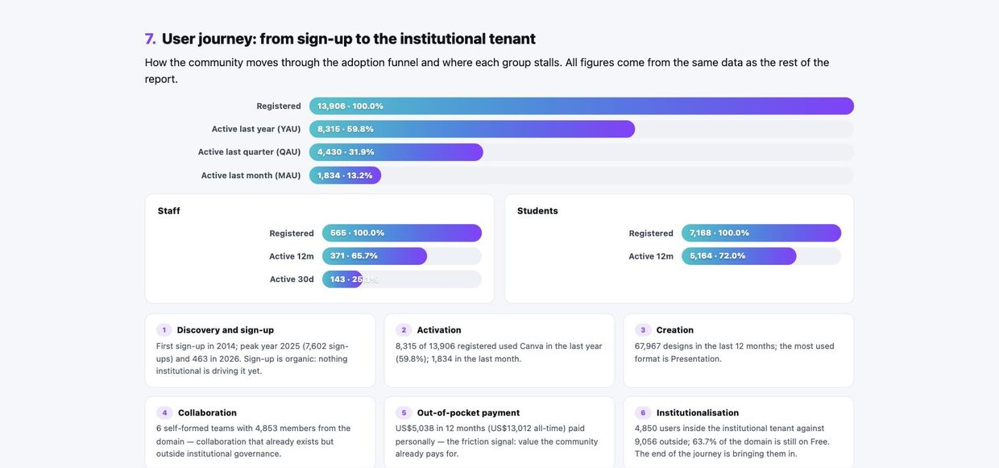
Fig. 14 — Section 7, the user journey: registered → active year → quarter → month, split for staff and students, plus the six journey stages from discovery to institutionalisation. The last stage — bringing outside users into the tenant — is usually the ask.
10. CRUE and K-12: what changes
CRUE Spain (77 universities)
Bilingual — use the ES/EN toggle top-right of the index. Plays A and C only: Play B matches zero today (all six Spanish customers are typed Campus) and Play D awaits the C4E/NFP eligibility feed. ARR exists for the six customers; prospect ARR is deliberately not sized yet.
K-12 Iberia (47 school accounts)
All agreements are free, so the currency is activation, not ARR: the key metrics are activated users against TPU (staff + students from Salesforce) and MAU/MACCDU trends read on core school months. Plays: A stalled activation · B declining use · C deepen · D healthy. The index also carries tenant structure (federated vs single) as a filter — in a federated group there is no single admin who can activate everyone, so the action changes.
Vocabulary that prevents arguments:activated = has created a Canva account and sits in the institutional team; active = has used Canva in the window (MAU = last 30 days). Entitled = what the agreement unlocks; provisioned = who is actually inside today. ARR figures are real won Salesforce opportunities, never estimates, and remain pending confirmation until Bush/Petia sign off.
Internal working document · Canva Education · figures in screenshots reflect the 2026-08-01 data cutoff and will differ after each monthly refresh · the guide describes controls and structure, which are stable across refreshes. Indexes: UK Higher Ed · CRUE Spain · K-12 Iberia.